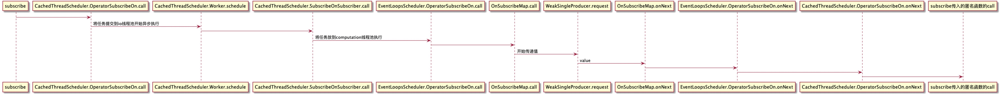

详读RxJava(subscribeOn实现)
今天我们聊聊subscribeOn线程切换的实现.阅读之前请先阅读之前的几篇博客
目录
第一种情况
造例,还是根据demo来看源码
Observable.just(1)
.subscribeOn(Schedulers.computation())
.subscribeOn(Schedulers.io())
.subscribe(integer -> System.out.println("action:" + Thread.currentThread().getName()));
输出的结果是:
action:RxComputationScheduler-1
虽然我们使用了两个subscribeOn,但是跟上篇博客所述的一样subscribeOn只有第一次(computation线程池)生效了。这是为何呢？这个我们最后再解释.先看下subscribeOn的内部.
public final Observable<T> subscribeOn(Scheduler scheduler, boolean requestOn) {
if (this instanceof ScalarSynchronousObservable) {
return ((ScalarSynchronousObservable<T>)this).scalarScheduleOn(scheduler);
}
return unsafeCreate(new OperatorSubscribeOn<T>(this, scheduler, requestOn));
}
可以看到它会判断当前Obervable是否是ScalarSynchronousObservable.从demo以及前面几篇博客可以知道just返回的Observable就是属于ScalarSynchronousObservable。但是subscribeOn返回的Observable不属于.所以第一次调用subscribeOn会进入scalarScheduleOn.第二次会进入unsafeCreate(……)。我们先看第一次调用.
public Observable<T> scalarScheduleOn(final Scheduler scheduler) {
Func1<Action0, Subscription> onSchedule;
if (scheduler instanceof EventLoopsScheduler) {
final EventLoopsScheduler els = (EventLoopsScheduler) scheduler;
onSchedule = new Func1<Action0, Subscription>() {
@Override
public Subscription call(Action0 a) {
return els.scheduleDirect(a);
}
};
} else {
onSchedule = new Func1<Action0, Subscription>() {
@Override
public Subscription call(final Action0 a) {
final Scheduler.Worker w = scheduler.createWorker();
w.schedule(new Action0() {
@Override
public void call() {
try {
a.call();
} finally {
w.unsubscribe();
}
}
});
return w;
}
};
}
return unsafeCreate(new ScalarAsyncOnSubscribe<T>(t, onSchedule));
}
这里会再用一个onSchedule函数将当前的scheduler包起来.当被调用到onSchedule的call方法时,线程就会被切换回当前onSchedule的线程池中.最后使用ScalarAsyncOnSubscribe将值T和onSchedule包装成一个OnSubscribe.
由于subscribeOn(Scheduler scheduler, boolean requestOn) 这一步只会在第一次使用onSchedule时会进入到scalarScheduleOn.而这里会将请求线程切换到第一次使用onSchedule传入的线程池.所以多次调用onSchedule的话最终工作的线程是第一次onSchedule传入的线程池.（第二次subscribeOn的OperatorSubscribeOn是怎么调用到ScalarAsyncOnSubscribe请看下面的第二种情况即可明白).
@Override
public void call(Subscriber<? super T> s) {
s.setProducer(new ScalarAsyncProducer<T>(s, value, onSchedule));
}
这是ScalarAsyncOnSubscribe的call实现.
ScalarAsyncProducer
@Override
public void request(long n) {
if (n < 0L) {
throw new IllegalArgumentException("n >= 0 required but it was " + n);
}
if (n != 0 && compareAndSet(false, true)) {
actual.add(onSchedule.call(this));
}
}
@Override
public void call() {
Subscriber<? super T> a = actual;
if (a.isUnsubscribed()) {
return;
}
T v = value;
try {
a.onNext(v);
} catch (Throwable e) {
Exceptions.throwOrReport(e, a, v);
return;
}
if (a.isUnsubscribed()) {
return;
}
a.onCompleted();
}
最终call被调用时完成了数据的传递a.onNext(v).
OperatorSubscribeOn
public final class OperatorSubscribeOn<T> implements OnSubscribe<T>
它实现了OnSubscribe.所以将会在订阅(subscribe)之后被调用它的call方法.
@Override
public void call(final Subscriber<? super T> subscriber) {
final Worker inner = scheduler.createWorker();
SubscribeOnSubscriber<T> parent = new SubscribeOnSubscriber<T>(subscriber, requestOn, inner, source);
subscriber.add(parent);
subscriber.add(inner);
inner.schedule(parent);
}
scheduler就是从subscribeOn传入的Scheduler.io().注意在这里都是io线程池,还没切换到computation池.在call中它会将源Observable(变量source,这个source就是第一次调用subscribeOn返回的Observable)和subscriber用SubscribeOnSubscriber进行包装. 然后使用将parent放入到Worker线程池中(上一篇博客中所提到EventLoopWorker都是实现了Worker接口,所以这里的Inner就是CachedThreadScheduler的内部类EventLoopWorker.)中进行调度.调度的结果就是调用到parent的call方法(从这一步开始数据的传输就开始在一个线程池中进行,即开始了线程切换.进行异步操作).
SubscribeOnSubscriber
static final class SubscribeOnSubscriber<T> extends Subscriber<T> implements Action0
它实现了Subscriber接口,所有有onNext,onCompleted,onError方法,先看它的call方法.
@Override
public void call() {
Observable<T> src = source;
source = null;
t = Thread.currentThread();
src.unsafeSubscribe(this);
}
这一步很关键. src即第一次调用subscribeOn返回的Observable.所以src.unsafeSubscribe(this),然后就会调用到ScalarAsyncOnSubscribe的call方法.而ScalarAsyncOnSubscribe最终会调用它的局部变量onSchedule的call.所以到这一步就会将io线程切换回onSchedule的线程(即computation线程).
第二种情况
Observable.just(1)
.map(new Func1<Integer, Long>() {
@Override
public Long call(Integer integer) {
System.out.println(integer+""+Thread.currentThread().getName());
return integer+1L;
}
})
.subscribeOn(Schedulers.computation())
.subscribeOn(Schedulers.io())
.subscribe(integer -> System.out.println("action:" + Thread.currentThread().getName()));
运行的结果是:
1RxComputationScheduler-1
action:RxComputationScheduler-1
可以看到subscribeOn可以影响到数据的上下游.且任务在第一次subscribeOn传入的线程池中工作.那么它又是如何生效的呢？
还是从subscribeOn入手
public final Observable<T> subscribeOn(Scheduler scheduler, boolean requestOn) {
if (this instanceof ScalarSynchronousObservable) {
return ((ScalarSynchronousObservable<T>)this).scalarScheduleOn(scheduler);
}
return unsafeCreate(new OperatorSubscribeOn<T>(this, scheduler, requestOn));
}
此时不管是第一次还是第二次调用subscribeOn,当前的Observable都不可能是ScalarSynchronousObservable.所以都会进入到OperatorSubscribeOn。那么只是使用OperatorSubscribeOn,怎么达到只作用在第一次调用subscribeOn的呢？我们直接看关键步骤.
OperatorSubscribeOn:
@Override
public void call(final Subscriber<? super T> subscriber) {
final Worker inner = scheduler.createWorker();
SubscribeOnSubscriber<T> parent = new SubscribeOnSubscriber<T>(subscriber, requestOn, inner, source);
subscriber.add(parent);
subscriber.add(inner);
inner.schedule(parent);
}
第一次调用时会将第一个scheduler(computation)作为局部变量scheduler保存下来.并传入SubscribeOnSubscriber.也就是说OperatorSubscribeOn,SubscribeOnSubscriber都和线程池scheduler是强绑定.并且SubscribeOnSubscriber会记录源Observable.
SubscribeOnSubscriber:
@Override
public void call() {
Observable<T> src = source;
source = null;
t = Thread.currentThread();
src.unsafeSubscribe(this);
}
结合代码.如果此时订阅已经开始,那么肯定是会创建两个OperatorSubscribeOn,SubscribeOnSubscriber.但是最外层的SubscribeOnSubscriber会通过source变量调用到最底层的SubscribeOnSubscriber.从而完成线程切换回第一个线程池的目标.
我们将视角切回调用完map之后。此时第一次调用subscribeOn.所以OperatorSubscribeOn中的source是保存着对map返回的Observable的引用. 所以computation的OperatorSubscribeOn被调用call时,会调用到map的Observable.从而影响上流数据.
小结
subscribeOn的特征是通过将上一个操作符返回的Observable作为source.一层层向后传递,订阅后类似递归一样一层层向前调用实现的. observeOn与它最大的区别也是在此了.
虽然最终作用在第一个线程池中,但是之后的线程池也是会生效的.虽然只是个短暂的线程切换.但是还是会有比较大的性能损耗.所以onSchedule尽量只使用一次。
请求流程如图:
